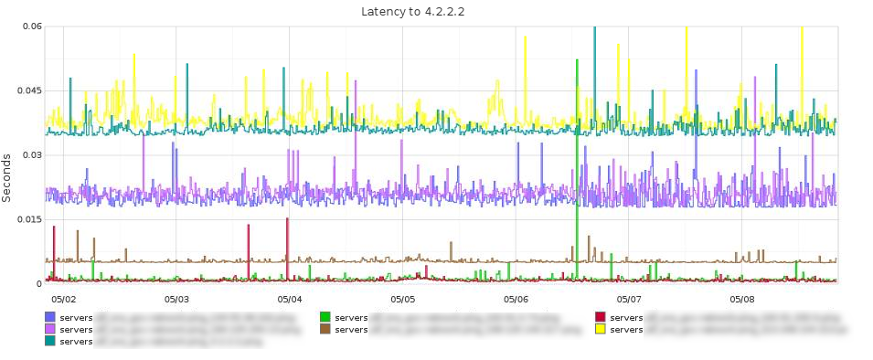
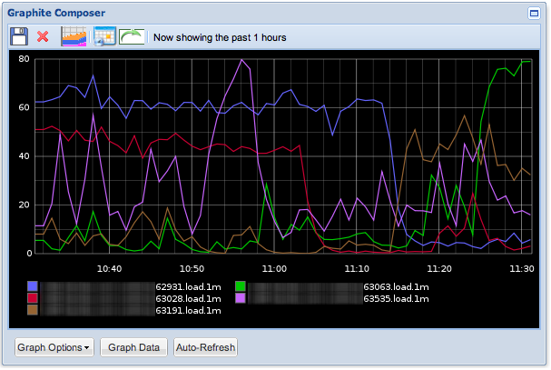

Graph EVERYTHING with Graphite!
I believe that a graphing tool should be flexible enough for the user to decide what metrics are important to their environment, and it should be able to accept metric data from any source.
There are pretty good graphing tools out there for the Linux engineer: Munin, Ganglia, Cacti, Zabbix, Collectd, etc.
I call these “graphing” tools, because I don’t consider them “monitoring” tools, like Nagios, WhatsUp, or Zabbix. Here is are my thoughts on graphing/monitoring:
Graphing Monitoring
-
Shows trends over time
-
Contains historic data
-
Post-event analytics
-
Performance trends
-
More Dev’y?
-
“Will run out of disk space in 3 days”
-
“Ldap queries up 200% in 6 months”
-
Alerts when thresholds are crossed
-
States are definite: Ok/Bad/Warning
-
Notifications are actionable
-
Makes events
-
More Ops’y?
-
“OMG OUT OF SPACE”
-
“LDAP IS DOWN”
{kind=link}
{kind=link}
Any good engineer knows you need both functions. Zabbix, WhatsUp, and some others handle both functions. Splunk can do threshold detection and make graphs too, but it ain’t no Nagios. Personally I like tools that do one thing, and one thing well. I am not after some sort of monitoring super-tool, and I don’t believe that #monitoringsucks.
What Makes Graphite Awesome
1: So many ways to get data into it
Graphite does not have any kind of polling daemon. It just accepts incoming metrics, it is up to you how you want to get them there, and what to call them. It enforces no naming convention. All it needs you to do is echo your metricname, value into tcp port 2003, it does the rest.
Ways you can get data into Graphite:
-
Push or pull from your munin-nodes
-
Pull from your existing Ganglia install
-
Integrate sending metrics directly into your application with statsd
-
echo``"mycoolmetric.rate 9000date +%s"``|nc graphite.server 2003 -
Extract metrics from your log files with logster
2. The only limit to visualizing your data is your imagination
Unlike other graphing systems where the style of the graph is pre-determined, Graphite also does not enforce any kind of convention for making its graphs. It is more like a graph api. Composing your graphs is a manual process, and requires a bit of creativity.
Graphite does not present the user with pages and pages of pre-rendered graphs like Ganglia, Munin, etc.
What kind of graphs can you make with Graphite? Lets see some cool examples:
Etsy’s php warnings correlated with code deploys:

My cool stacked latency graph:
{kind=link}
Filtering out deviant server loads: 
{kind=link}
You can see that graphite fits my initial principles. It can suck in metrics from anywhere, and create graphs to fit your imagination. Combine this with a crazy amount of functions that you can apply to your metrics, the sky is the limit!
Cool graphs for you to make:
-
Ratio of shopping cart items to unique visitors?
-
Overlay your average page load time with your code deploys?
-
Graph your average rate of change of your storage?
-
Plot the mortality rate of your EC2 Instances?
More Reading:
-
How to install graphite via RPMS